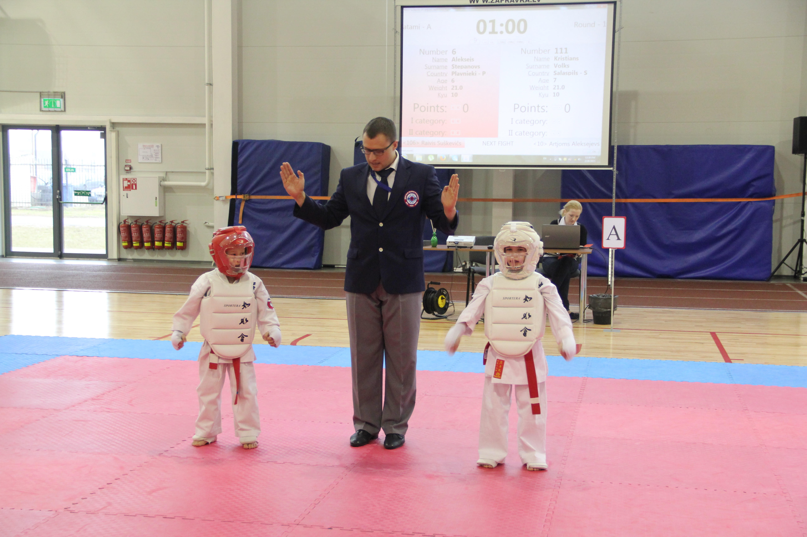
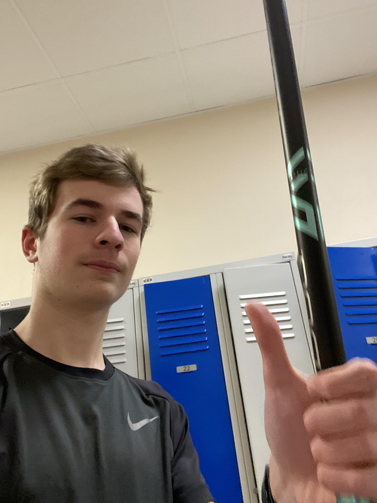
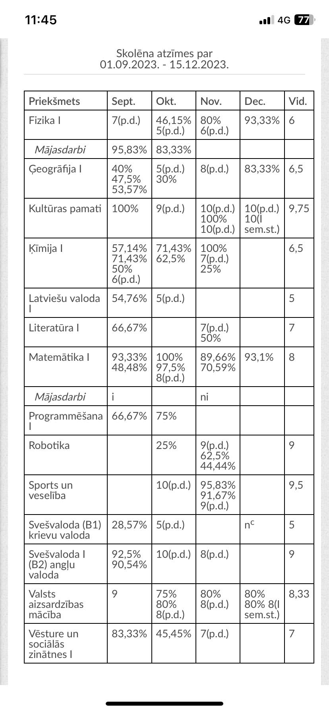

Mani sauc Kristiāns un es mācos Salaspils 1. vidusskolā. Man patīk nodarboties ar dažādiem sporta veidiem, bet personiski es eju uz
florbola trenniņiem. Skolā es mācos "labi" un 10. klasē esmu sācis mācīties vēl labāk man ir mazāks brālis. Visi saka viņš ir ļoti
līdzīgs man, bet es tam neticu. Man ir kaķis, Tīna. Brīvajā laikā man patīk spēlēt datorspēles.
Karate

Mana pirmā pieredze sportā bija ar karate ar kuru es sāku nodarboties aptuveni septiņu gadu vecumā.
Florbols

Pēc karatē es sāku iet uz vieglatlētiku, bet man baigi neintersēja vieglatlētika tāpēc es sāku iet florbolā. Es vēljoprojām nodrabojos ar florbolu līdz šij dienai.
Skola

Skolā man nav gājis labi, iestājoties vidusskolā es sapratu ka ir jāsāk labi mācīties un man liekas ka man pagaidām sanāk labi. Ja gribat varat apskatīties manas atzīmes augšējā bildē.